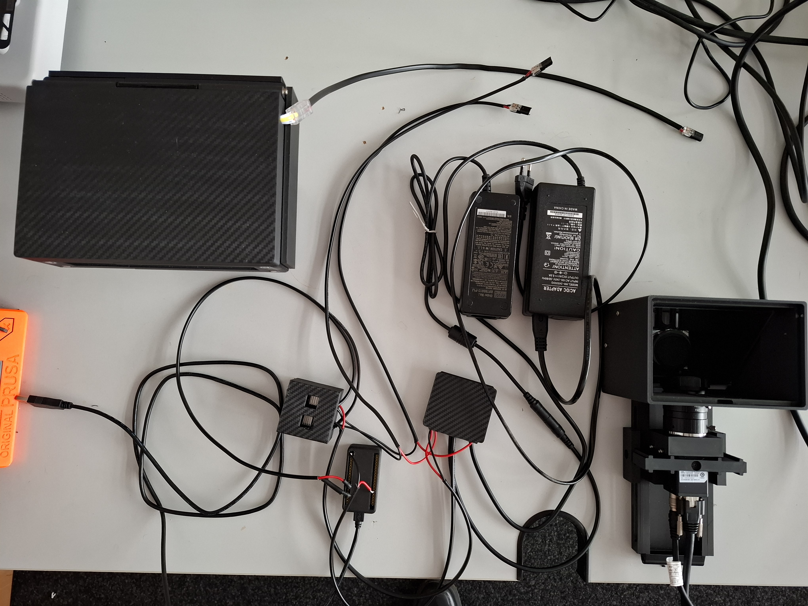

Hardware & Assembly¶
The recording system is built around an ESP32-DevKitC microcontroller that drives two LED channels (IR + White) via logic-level MOSFETs and reads a DHT22 environmental sensor. This is the standard, recommended setup.
Full step-by-step assembly guide
This page is a quick wiring & pinout reference. The complete assembly instructions (with build photos) are maintained in the project README on GitHub.
Alternative board
An ESP32-S3-BOX-3 (Alternative) with an integrated touchscreen is also supported. It uses different GPIO pins but the same firmware (auto-detected). Use it only if you need the display — for most users the ESP32 DevKit below is the simpler choice.

Required components¶
| # | Component | Notes |
|---|---|---|
| 1 | ESP32-DevKitC | Standard board. Firmware v2.2+. GPIO 4 (IR), 15 (White), 14 (DHT22). |
| 2 | IR LED strip | 850 nm, 12 V (e.g. 2538 120 LED/m IR) |
| 3 | White LED strip | broad-spectrum COB, 24 V |
| 4 | DHT22 sensor | −40…80 °C (±0.5 °C), 0–100 % RH; board with integrated pull-up |
| 5 | 2× IRLZ34N MOSFET | logic-level, one per LED channel |
| 6 | 3× WAGO 221-413 | lever connectors (12 V+, 24 V+, common ground) |
| 7 | 220 Ω resistor | gate series resistor |
| 8 | 12 V + 24 V PSU | 2–5 A each, regulated, separate from USB |
| 9 | Camera | Hik Robotics MV-CS-013 60GN (NIR) |
| 10 | 3D-printed parts | see 3D-Printed Parts |
Different LED voltages
IR and White LEDs run on different voltages (12 V vs. 24 V) — use two separate PSUs and never cross the rails.
Pin reference — ESP32 DevKit¶
GPIO 4 → IR LED MOSFET gate (PWM, 15 kHz)
GPIO 15 → White LED MOSFET gate (PWM, 15 kHz)
GPIO 14 → DHT22 data (with 10 kΩ pull-up)
3.3V → DHT22 VCC
GND → DHT22 GND, common ground hub (WAGO #W2)
LED system assembly (IRLZ34N MOSFETs)¶
Each LED channel is switched by one logic-level IRLZ34N MOSFET driven directly from an ESP32 GPIO — no gate driver needed.
MOSFET specifications
- Model: BOJACK IRLZ34N (IRLZ34NPBF)
- Type: N-channel logic-level MOSFET
- Maximum ratings: 30 A, 55 V
- Gate threshold: 1–2 V (logic-level, works with 3.3 V from the ESP32)
- Package: TO-220
Assembled LED driver stage — dual IRLZ34N MOSFETs with WAGO connectors.
MOSFET connection details
- Gate → ESP32 GPIO (4 or 15) via a 220 Ω resistor
- Drain → LED connection (−) [12 V for IR, 24 V for White]
- Source → common ground (WAGO #W2)
- LED connections:
- IR LED: (+) from 12 V PSU via WAGO #W1
- White LED: (+) from 24 V PSU via WAGO #W3
- DHT22:
- GND → common ground W2 (or best: directly to ESP32 GND)
- VCC → 3.3 V at the ESP32
- Data → GPIO 14
IRLZ34N (IR LED): IRLZ34N (White LED):
Gate → ESP32 GPIO 4 (220 Ω) Gate → ESP32 GPIO 15 (220 Ω)
Drain → IR LED (−) / 12 V loop Drain → White LED (−) / 24 V loop
Source → common ground (W2) Source → common ground (W2)
Good to know
- IRLZ34N is logic-level compatible (works with a 3.3 V gate voltage).
- No additional driver circuit is needed between ESP32 and MOSFET.
- PWM frequency: 15 kHz (set in firmware).
- Handles high-power LED strips (up to 30 A theoretical; typically 1–3 A).
Safety notes
- IR LEDs are invisible — use an IR viewer card to verify operation.
- Add a heatsink on the MOSFET if driving >2 A continuous (usually not the case).
- Add a flyback diode (1N4007) across the LED if using inductive loads.
- Ensure a common ground between ESP32, PSUs, and MOSFETs.
- Use appropriately gauged wire for the current loads.
Power distribution (WAGO)¶
WAGO #W1: 12 V+ → IR LED (+)
WAGO #W3: 24 V+ → White LED (+)
WAGO #W2: common ground (CRITICAL!)
├─ 12 V PSU GND
├─ 24 V PSU GND
├─ ESP32 GND
├─ both MOSFET sources
└─ both LED cathodes (−)
Common ground is mandatory
The USB/ESP32 ground and both PSU grounds must be tied together at WAGO #W2. Without a common ground the MOSFET gates float and the LEDs will not switch reliably.
DHT22 sensor¶
- The DHT22 board has an integrated pull-up resistor — no external resistor needed.
- Direct 3-wire connection to the ESP32.
- Use short wires (<40 cm) for reliable communication.
Why 3.3 V (not 5 V)?
The DHT22 datasheet allows 3.3–6 V (5 V optimal), but this setup runs the sensor at 3.3 V for perfect logic-level matching:
- ESP32 GPIO operates at 3.3 V logic ✅
- DHT22 powered at 3.3 V ✅
- Integrated pull-up at 3.3 V ✅
- All signal levels matched ✅
5 V can give marginally more stable readings, but 3.3 V works reliably and avoids any level-shifting. The sensor has been tested extensively at 3.3 V with stable temperature/humidity readings.
Power budget¶
| Component | Voltage | Current | Notes |
|---|---|---|---|
| ESP32 | 5 V USB | ~500 mA | powered from computer |
| DHT22 | 3.3 V | 1–2 mA | from ESP32 3.3 V pin |
| IRLZ34N gates (2×) | 3.3 V | <1 mA each | logic-level, driven by GPIO |
| IR LED strip | 12 V | 1–3 A | via MOSFET, dedicated 12 V PSU |
| White LED strip | 24 V | 1–3 A | via MOSFET, dedicated 24 V PSU |
Signal specifications¶
PWM (GPIO 4, 15): 3.3 V logic, 15 kHz, duty 0–100 %, rise/fall <1 µs.
DHT22 (GPIO 14): single-wire digital, 10 kΩ pull-up to 3.3 V, ~0.5 Hz.
Serial: UART over USB, 115200 baud, 8N1, no flow control.
Photos & 3D parts¶
- Hardware Photos — assembled setup, imager body, mounts.
- 3D-Printed Parts — STL/STEP files and print settings.
Firmware¶
Flash the ESP32 straight from your browser — no toolchain needed — via the Firmware Installer (Chrome/Edge). Arduino IDE / PlatformIO instructions are in the project README.
Troubleshooting¶
- ESP32 not detected: use a data USB cable, install CH340/CP2102 drivers, try another port.
- LEDs not switching: check PSU power, verify PWM on the gate (0–3.3 V square wave), confirm common ground.
- DHT22 reads 0.0: confirm 10 kΩ pull-up and 3.3 V, data on GPIO 14 (not GPIO 4).